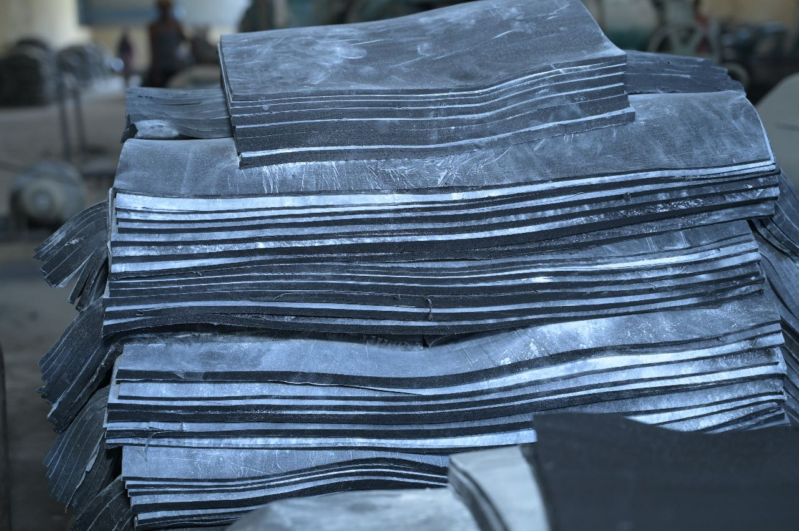
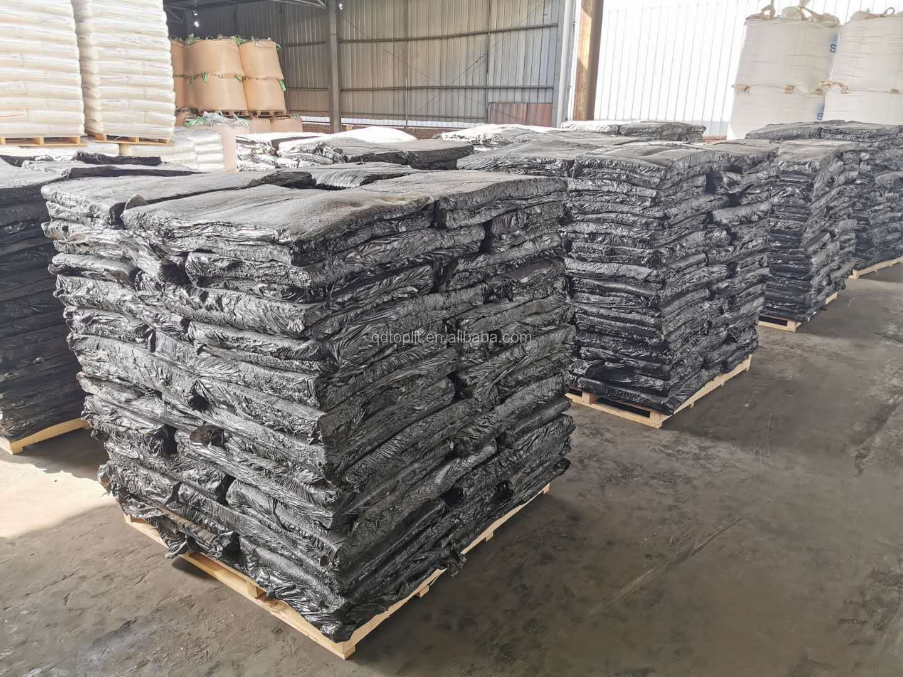
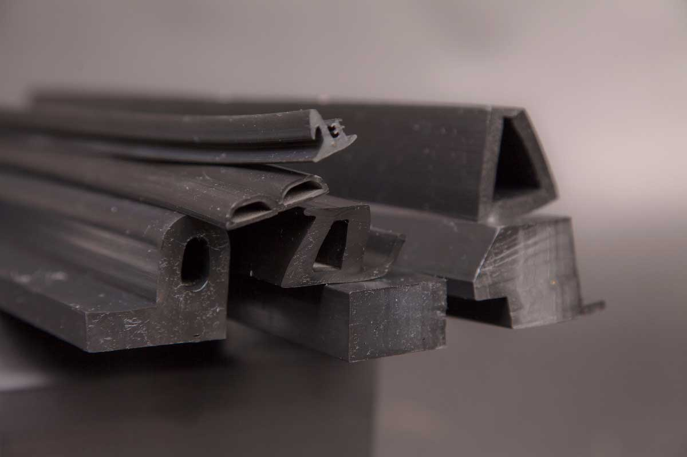
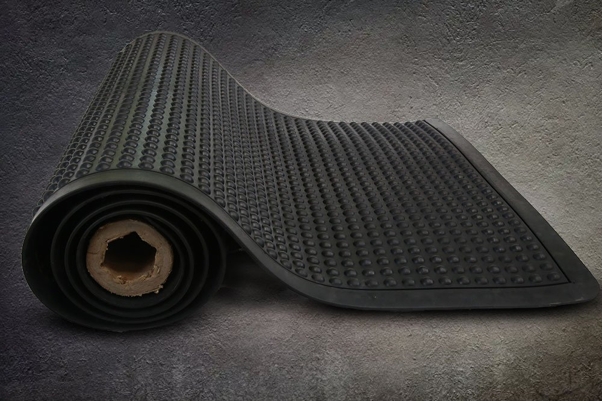

Our Products

Reclaimed Rubber Grade 1
High quality reclaimed rubber suitable for industrial rubber manufacturing and various rubber compounding applications.

Reclaimed Rubber Grade 3
Economical reclaimed rubber grade used in general rubber manufacturing where cost efficiency is required.

Extruded Rubber Profiles
Rubber profiles manufactured for sealing, insulation and industrial applications.

Rubber Mats
Durable rubber mats produced for industrial, commercial and safety flooring applications.
Applications
Reclaimed rubber produced by Cochin Reclaim & Rubbers is widely used in the manufacture of tyres, tubes, footwear, conveyor belts, rubber mats, and other industrial rubber products.
The material provides a cost-effective and environmentally responsible alternative for rubber compounding while maintaining durability and performance.